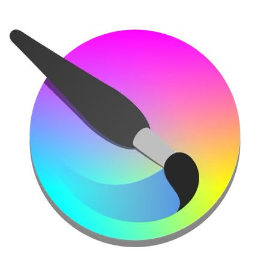
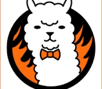
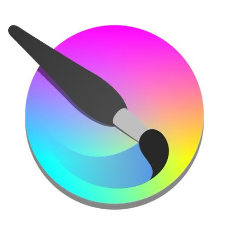
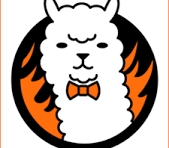

Sobre a artista
Prezado Leitor.
Me chamo Amanda Moreira e atualmente estou cursando Design no Senac. Meu objetivo sempre foi explorar tanto a arte quanto a área editorial e poder dar vida tanto as minhas crições quanto a de outras pessoas. Abaixo segue alguns projetos criados por mim durante o segundo sementre do cursoProjetos
Possuo dominância nos seguintes programas:

 


